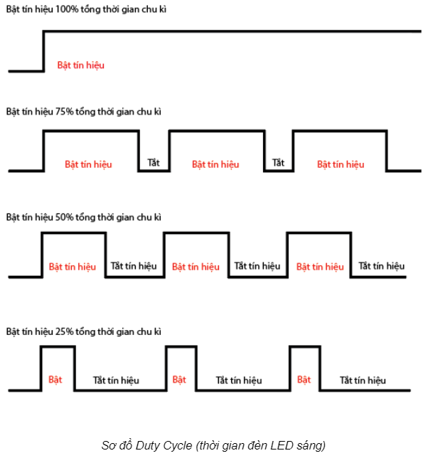
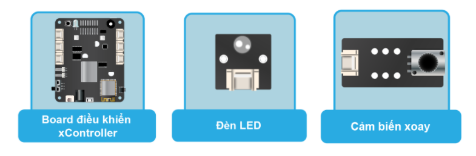
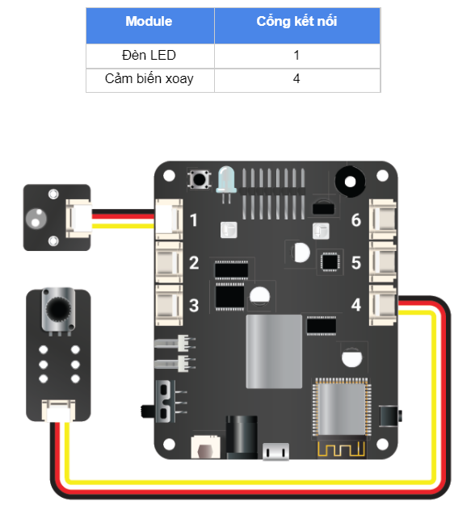

6. Bài học 5: Điều chỉnh độ sáng LED
Mục tiêu
Trong bài học trước, chúng ta đã tìm hiểu về đọc tín hiệu Analog từ cảm biến xoay. Ngoài ra, chúng ta cũng có thể xuất ra tín hiệu Analog thay vì chỉ xuất ra tín hiệu bật tắt bằng các trạng thái HIGH và LOW. Một số ví dụ: điều chỉnh độ sáng đèn LED, thay đổi tốc độ quay nhanh hay chậm của động cơ, cho âm thanh của loa to nhỏ theo ý muốn,…
Trong bài học này, chúng ta sẽ sử dụng tín hiệu Analog Output để tăng giảm độ sáng của đèn LED bằng giá trị của cảm biến xoay.
Kiến thức mới
PWM (Pulse Width Modulation)
Trên thực tế, chip điều khiển không thể xuất ra được tín hiệu Analog thật mà chỉ có thể xuất ra tín hiệu HIGH (bật) và LOW (tắt). PWM là một cách thức thông minh mà chip điều khiển dùng để xuất ra tín hiệu Analog. PWM hoạt động như sau:
PWMchia thời gian thành các chu kỳ ngắn. Tần số (frequency, đơn vị là Hz) là số chu kỳ trong 1 giây.Ví dụ: Giả sử ta chia ra mỗi chu kỳ kéo dài là 0,1 giây (100 mili giây). Khi đó, tần số sẽ bằng:
frequency = 1 / 0,1 = 10 (Hz)Trong trường hợp này, tần số là 10 chu kỳ trong 1 giây (10Hz). -
PWMsẽ bật tắt liên tục trong mỗi chu kỳ này và lặp lại giống nhau ở tất cả các chu kỳ. Độ mạnh yếu của tín hiệuAnalogđược quyết định bởi tổng số thời gian bật trên tổng thời gian của chu kỳ (gọi làduty cycle).
Ví dụ sau sẽ giúp bạn hiểu rõ hơn: Cho thời gian một chu kỳ là 100 mili giây, tần số 10Hz:

Nếu ta muốn đèn LED chỉ sáng 25% so với mức tối đa (mức HIGH) thì PWM sẽ chỉ bật tín hiệu trong suốt 25% thời gian của chu kỳ (25 milli giây) và tắt trong 75% thời gian còn lại.
Nếu ta muốn đèn LED chỉ sáng 50% thì
PWMsẽ bật tín hiệu trong suốt 50% thời gian của chu kỳ (50 mili giây) và tắt trong 50% thời gian còn lại.
{kind=link}
Lưu ý: xController có 16 kênh PWM độc lập (đánh số từ 0-15). Mỗi kênh này có thể cấu hình để sử dụng với tần số và Duty Cycle khác nhau.
Thiết bị cần sử dụng
{kind=link}
Kết nối phần cứng
{kind=link}
Viết chương trình
Mở phần mềm Arduino IDE.
Copy đoạn code sau, click vào nút Verify để kiểm tra lỗi chương trình. Sau khi biên dịch không báo lỗi, bạn có thể nạp đoạn code vào board.
int LEDPin = D1_1; // Module LED nối vào cổng số 1
int rotaryPin = A4_1; // Module rotary nối vào cổng số 4
int rotaryValue = 0;
// khai cấu hình PWM
const int frequency = 5000;
const int pwmChannel = 0; // channel bất kỳ 0-15
const int resolution = 12;
void setup(){
// cấu hình và khởi tạo PWM
ledcSetup(pwmChannel, frequency, resolution);
// gắn PWM với chân IO của đèn LED
ledcAttachPin(LEDPin, pwmChannel);
}
void loop() {
// đọc giá trị cảm biến
rotaryValue = analogRead(rotaryPin);
// thay đổi tín hiệu PWM
ledcWrite(pwmChannel, rotaryValue);
}
Giải thích chương trình
int LEDPin = D1_1; // Module LED nối vào cổng số 1
int rotaryPin = A4_1; // Module rotary nối vào cổng số 4
int rotaryValue = 0;
Khai báo các chân IO nối với cảm biến xoay và LED như trong bài học trước.
const int frequency = 5000;
Khai báo tần số sử dụng cho PWM là 5000 Hz = 5 KHz. Tần số này đủ nhanh để mắt người có thể quan sát rõ được.
const int pwmChannel = 0; // channel bất kỳ 0-15
Khai báo kênh PWM sử dụng, có thể chọn 1 kênh bất kỳ từ 0 ~ 15.
const int resolution = 12;
Chọn độ phân giải của duty cycle trong PWM. Ở đây ta dùng 12 bit, tức là duty cycle có thể thay đổi trong khoảng từ 0 ~ 4095.
ledcSetup(pwmChannel, frequency, resolution);
Khởi tạo kênh PWM với cấu hình đã khai báo.
ledcAttachPin(LEDPin, pwmChannel);
Gắn kênh PWM đã tạo với chân IO của đèn LED để có thể điều khiển được LED bằng PWM.
rotaryValue = analogRead(rotaryPin);
Đọc giá trị tín hiệu Analog ở chân IO được chỉ định, đồng thời trả về giá trị kiểu số nguyên int (nằm trong khoảng từ 0 ~ 4095), tương tự như trong bài trước.
ledcWrite(pwmChannel, rotaryValue);
Thay đổi độ sáng của đèn LED bằng cách thay đổi giá trị duty cycle của kênh PWM. Giá trị thay đổi bằng với giá trị của cảm biến xoay.
Sau khi nạp chương trình vào board, bạn xoay biến trở sẽ thấy sự thay đổi về độ sáng của đèn LED.